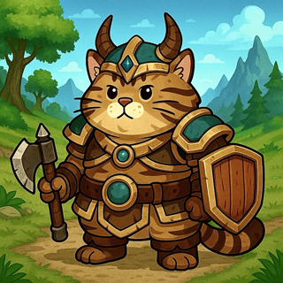
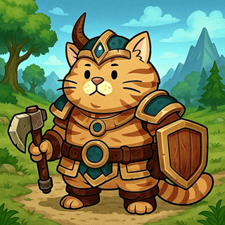
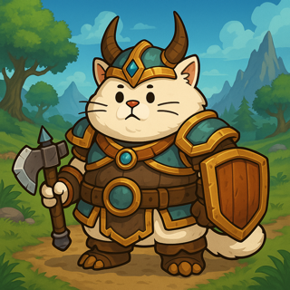

Описание (RU)
BattlePaws of Azeria — коллекция мультяшных NFT-котов, вдохновлённая духом World of Warcraft. Эти пушистые воины — не просто милые мордашки: каждый готов к битве в доспехах, с топорами и магией. От табби до мейн-кунов — собери свою команду героев и отправься в легендарные сражения за Азерию!
Description (EN)
BattlePaws of Azeria is a cartoon-style NFT collection of fearless warrior cats inspired by the spirit of World of Warcraft. Cute yet fierce, each feline hero comes armored and armed for battle. From tabbies to Maine Coons — assemble your squad and fight for the glory of Azeria!
Примеры NFT / NFT Samples


